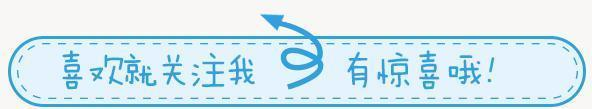
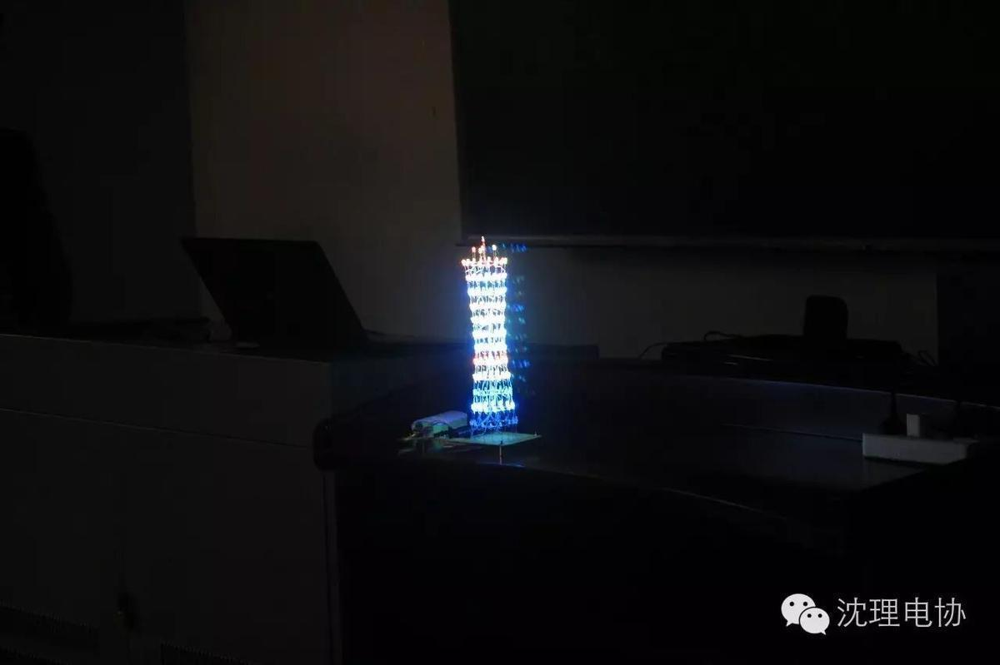
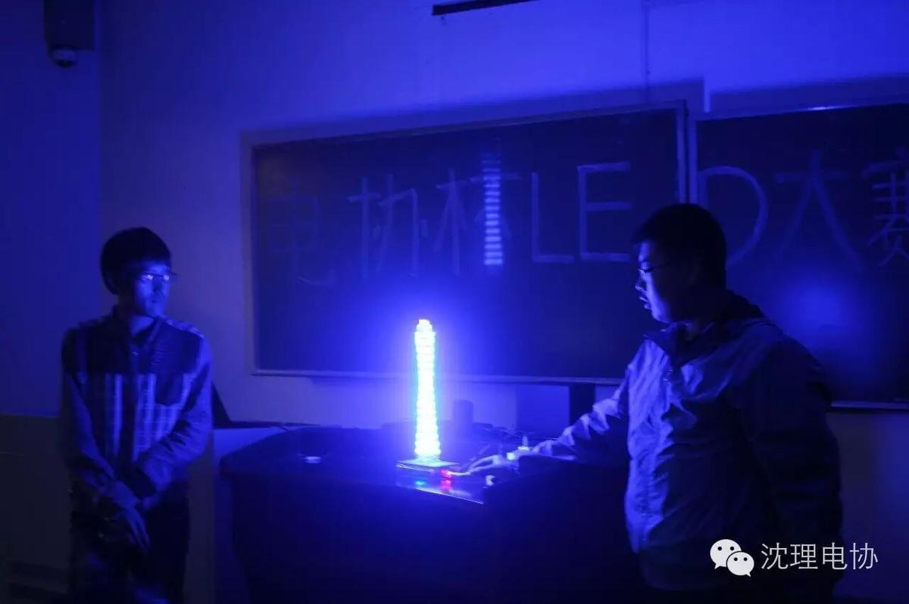
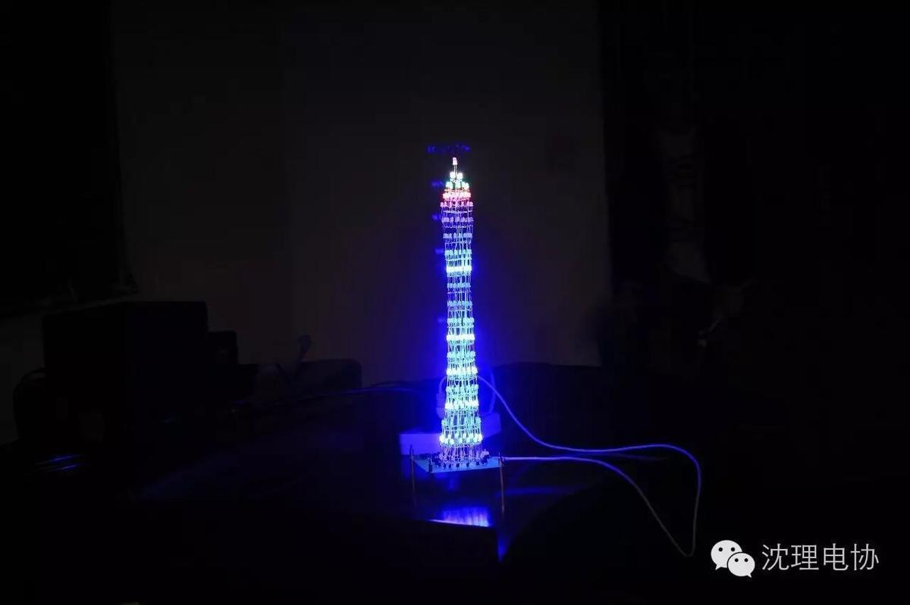
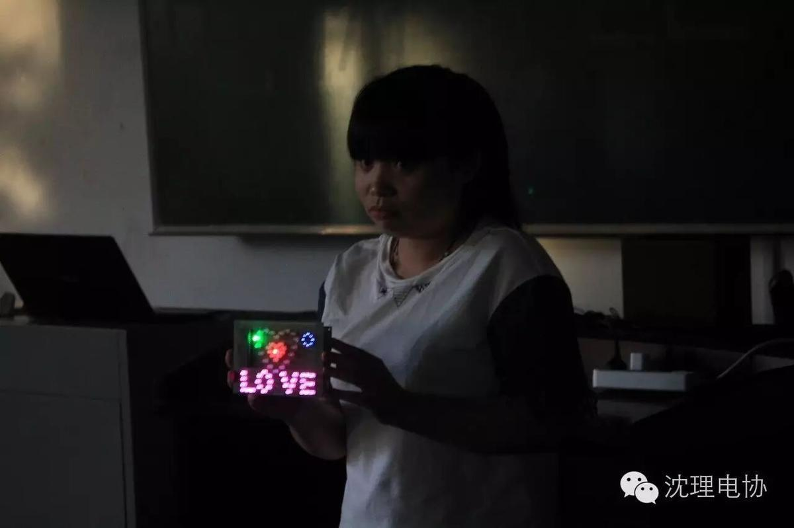

LED大赛预赛圆满结束！！！

不多说了，现在必须先上图，让大欣赏这种无与伦比的盛宴！
 什么？还不过瘾？别急啊！小编不会吊大家胃口的！别动手！上图！！
什么？还不过瘾？别急啊！小编不会吊大家胃口的！别动手！上图！！




听说大家一直看男生做的没有意思，想要看女孩子做的？好好，小编这就给大家看看女孩子做的，不过不要羡慕哦！ 还有，千万不要告诉他本人哦！ 不然明天你们就见不到小编了！！

看见这么可爱的女孩子做的LED灯了吗？ 彩色的心形灯再加上 love的浪漫气息，你们是不是心动了呢！ 不过小编提醒大家，千万不要自叹不如，一定要努力，不能被女孩子比下去！！！ （不要告诉这么女孩子哦！！）
给大家展示了这么多，小编也有点累了！让我们看看台下的小伙伴们的作品，亮了灯 的作品是很难看清楚样子的，所以小编带大家看看台下还未亮灯的小伙伴的作品！！！
这样看是不是清楚了很多呢！ 相信小伙伴们也很惊讶这些大神的脑洞吧！反正小编是十分佩服了！！！！！

相信好多小伙伴都心动了，也很后悔今天没能参加这么精彩的比赛，没能好好地展示自己，如果想要观赏更美的LED，明天下午我们在综合楼A120等着你的到来！！
信息部\张晋鹏